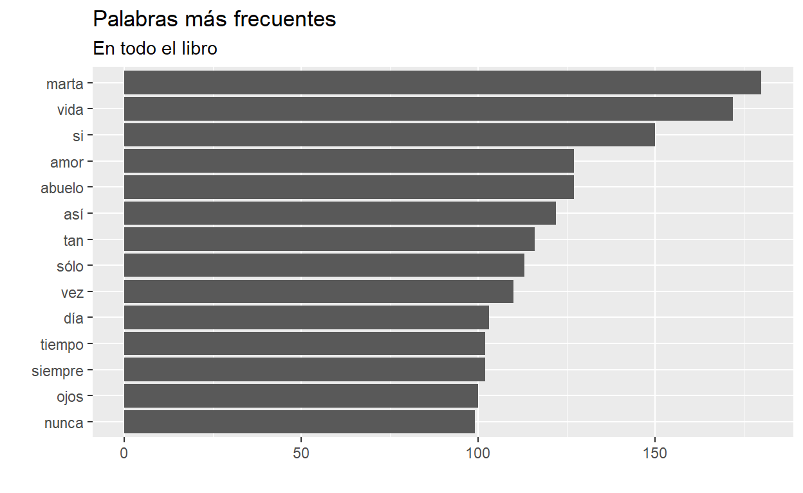
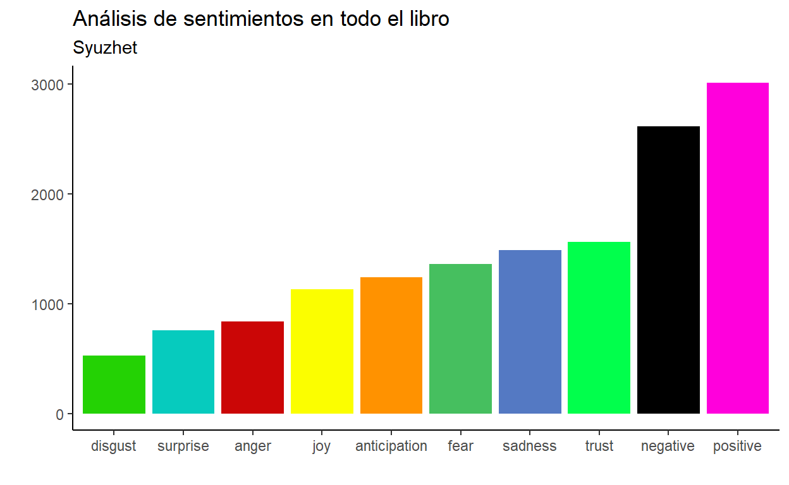
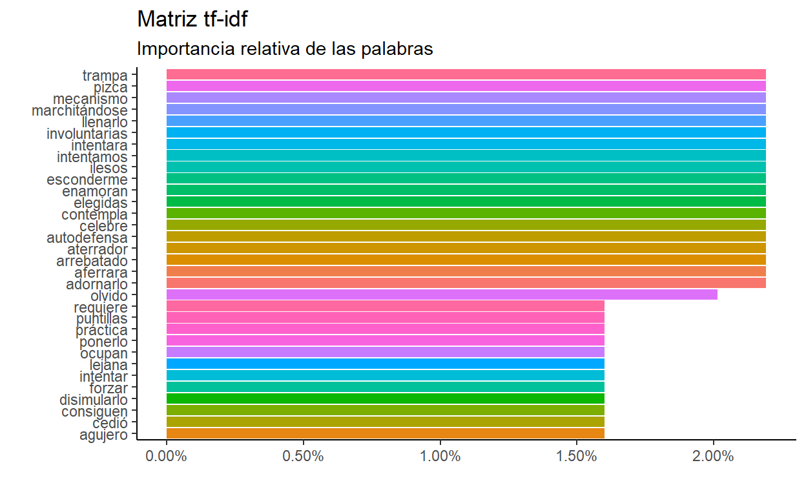

¡Bienvenidas!
En esta ocasión sigo investigando hacer cosas interesantes de análisis de texto, pero voy a aprovechar para practicar como sacar información de archivos pdf. Esta es una gran herramienta porque en el mundo real los gobiernos nos mandan información pública en pdf y muchas veces pasarlos a mano no es una opción viable…
Bueno, regresando al tema, hoy voy a analizar una novela que acabo de terminar: Días sin ti, de Elvira Sastre. Una novela de corazones rotos a través de la perspectiva de una abuela que perdió a su esposo durante la Guerra Civil Española, y su nieto a quien su pareja lo deja. Son doce capítulos que representan las fases del enamoramiento, y si no la han leído, haganlo, es hermosa.
No saben como me emociona la posibilidad de hacer este análisis.
Días sin ti es una historia de complicidad a través del tiempo, la de una abuela y su nieto. Dora, maestra en tiempos de la República, comparte con Gael la historia que la ha llevado a ser quien es. Con ternura, pero con crudeza, confiesa sus emociones a su nieto escultor, un joven con una sensibilidad especial, y le brinda, sin que éste lo sepa todavía, las claves para reponerse de las heridas causadas por un amor truncado.
A través de la reflexión y de lo que enseña la melancolía, esta novela transita esos caminos por los que todos, en algún momento, tenemos que pasar para comprender que la vida y el amor son sublimes precisamente porque tienen un final.
Para realizar este análisis, es necesario que utilicen su copia de la novela en pdf.
Hay 2 paquetes nuevos: pdftools y syuzhet. El primero, sirve para extraer texto, adjuntos y metadata de los pdf (ojo, yo personalmente no recomiendo este paquete para extraer tablas/bases de datos, para eso yo recomiendo usar tabulizer).
El segundo, es un paquete que tiene cuatro diccionarios de sentimientos. En otras palabras, gente muy chingona está alimentando este paquete constantemente con palabras y sentimientos de diversas fuentes.
dias_pdf <- pdf_text(pdf) %>%
as_tibble() %>%
mutate(
capitulo = cumsum(str_detect(value, "SIN TI")),
value = str_remove_all(value, paste("Página", "[:digit:]", sep = " "))
)
dias <- dias_pdf %>%
unnest_tokens(Palabra, value) %>%
filter(!Palabra %in% stopwords("es"))
Hasta aquí, el proceso es el mismo: leemos nuestra copia de “Días sin ti” (que no sale en el código), y luego lo convertimos en data frame (as_tibble), creo una variable para dividir el libro en capítulos y le quito el número de página a todos las páginas. Por último, convertimos todo a tidy text y quitamos las stop words.
dias %>%
count(Palabra, sort = T) %>%
filter(n >= 99) %>%
mutate(Palabra = reorder(Palabra, n)) %>%
ggplot(aes(x = n, y = Palabra)) +
geom_bar(stat = "identity") +
labs( x = "", y = "",
title = "Palabras más frecuentes",
subtitle = "En todo el libro")

Sentiment analysis
Ahora, vamos a realizar el análisis de sentimientos como la vez anterior y con otra función para comparar resultados.
afinn <- read.csv("https://raw.githubusercontent.com/jboscomendoza/rpubs/master/sentimientos_afinn/lexico_afinn.en.es.csv")
inner_join(dias, afinn, by = "Palabra") %>%
mutate(tipo = ifelse(Puntuacion > 0, "Positiva", "Negativa")) %>%
group_by(tipo) %>%
count(Palabra, sort = T) %>%
filter(n >= 30) %>%
mutate(Palabra = reorder(Palabra, n)) %>%
ggplot(aes(x = n, y = Palabra, fill = tipo)) +
geom_bar(stat = "identity", position = "dodge") +
labs(title = "Análisis de sentimientos",
subtitle = "Dataset Afinn",
x = "", y = "",
fill = "Tipo de emoción") +
theme_classic() +
theme(legend.position = "bottom")

Ahora, vamos a utilizar el paquete syuzhet. Ojo, esta función tarda un rato en correr.
Nos va a devolver un data frame con los resultados por palabra en 8 categorías diferentes: - anger - anticipation - disgust - fear - joy - sadness - surprise - trust
dias_nrc <- get_nrc_sentiment(char_v = dias$Palabra, language = "spanish")
dias_final <- bind_cols(dias, dias_nrc)
Posteriormente, hay que unir este data frame por emociones con nuestro data frame original. Le hice una transformación con tidyr para poder gráficar, y así debe de quedar:
dias_final %>%
pivot_longer(
cols = 3:12
) %>%
group_by(name) %>%
summarise(total = sum(value)) %>%
ungroup() %>%
mutate(name = reorder(name, total)) %>%
ggplot(aes(x = name, y = total, fill = name)) +
geom_bar(stat = "identity") +
scale_fill_manual(
breaks = c("disgust", "surprise", "anger", "joy", "anticipation", "fear", "sadness", "trust", "positive", "negative"),
values = c("#24D204", "#06CBBE", "#CB0606", "#FBFE00", "#FF9200", "#46BF5F", "#5479C3", "#01FF4C", "#FF00DC", "#000000")
) +
theme_classic() +
labs(
title = "Análisis de sentimientos en todo el libro",
subtitle = "Syuzhet",
x = "", y = ""
) +
theme(legend.position = "blank")

Claramente syuzhet es superior a afinn. Pero requiere mucho más tiempo de procesamiento, y por lo tanto si te equivocas vas a darte de topes, pero creo que lo vale.
Recapitulemos un poco: afinn clasifica las palabras y nosotros le asignamos una intención positica o negativa en función de su signo distinto a cero. Mientras que syuzhet te devuelve un data frame con 10 categorías, ya que una sola palabra puede tener multiples intenciones. Además, te indica si la intención de esta es positiva o negativa.
Leí en la documentación, que hay diversas metodologías para realizar el procesamiento de texto. Pero eso es material para otro post. Ahora quiero aprovechar esta claificación para revisar los sentimientos por capitulo :D
plot_chapter_all <- dias_final %>%
pivot_longer(
cols = 3:12
) %>%
filter(name != "positive" & name != "negative") %>%
group_by(capitulo, name) %>%
summarise(value = sum(value)) %>%
mutate(
total = sum(value),
porcentaje = round((value*100)/total, 2)
) %>%
ungroup() %>%
ggplot(aes(x = name, y = porcentaje, fill = name)) +
geom_bar(stat = "identity") +
scale_fill_manual(
breaks = c("disgust", "surprise", "anger", "joy", "anticipation", "fear", "sadness", "trust"),
values = c("#24D204", "#06CBBE", "#CB0606", "#FBFE00", "#FF9200", "#46BF5F", "#5479C3", "#01FF4C")
) +
coord_flip() +
theme_classic() +
theme(legend.position = "blank",
axis.text.x = element_blank()) +
facet_grid(cols = vars(capitulo)) +
labs(title = "Proporción de sentimientos",
subtitle = "Por capítulo",
x = "", y = "")
ggplotly(plot_chapter_all) %>%
layout(showlegend = F)
preservefaa79549b34ab7d9
Aún tengo problemas con plotly, pero con esto ustedes pueden ver el porcentaje de los sentimientos por capítulos. Este cálculo es la suma de todas las observaciones por capítulo. Es decir, si hay 10 puntos de ira, y en el capitulo hay 100 puntos, esto implica que el 10% de texto del capítulo tiene la emoción del enojo (ira).
Ahora, solo veamos las emociones negativas y positivas por capítulo.
plot_chapter <- dias_final %>%
select(-c(3:10)) %>%
pivot_longer(
cols = 3:4
) %>%
group_by(capitulo, name) %>%
summarise(value = sum(value)) %>%
mutate(
total = sum(value),
porcentaje = round((value*100)/total, 2)
) %>%
ungroup() %>%
ggplot(aes(x = name, y = porcentaje, fill = name)) +
geom_bar(stat = "identity") +
scale_fill_manual(
breaks = c("positive", "negative"),
values = c("#FF00DC", "#000000")
) +
theme_classic() +
theme(axis.text.x = element_blank(),
legend.position = "bottom") +
facet_grid(cols = vars(capitulo)) +
labs(title = "Emociones positivas y negativas",
x = "", y = "", fill = "Emoción")
ggplotly(plot_chapter) %>%
layout(showlegend = F)
preserve9d69c710e4488764
Con esto tenemos una aproximación más clara sobre lo que trata el libro, o mejor dicho, de lo que vamos a sentir. Sin embargo, no solo se trata de eso. Continuando con el texto de Julia Silge, podemos hacer una matriz tf-idf (Term Frequency - Inverse Document Frequency). Este análisis muestra la frecuencia de una palabra ajustada por su uso (una multiplicación). Afortunadamente,tidytext ya tiene una función para esto.
Matriz tf-df
dias %>%
group_by(capitulo) %>%
count(Palabra, sort = T) %>%
mutate(
total = sum(n)
) %>%
bind_tf_idf(Palabra, capitulo, n) %>%
ungroup() %>%
filter(tf_idf > 0.015) %>%
ggplot(aes(x = tf_idf, y = fct_reorder(Palabra, tf_idf), fill = Palabra)) +
geom_bar(stat = "identity") +
scale_x_continuous(labels = scales::percent) +
theme_classic() +
theme(legend.position = "blank")+
labs(title = "Matriz tf-idf",
subtitle = "Importancia relativa de las palabras",
x = "", y = "")

Con esto, es evidente que las palabras más utilizadas en un texto (usualmente conectores) no son tan importantes. La intuición es que la importancia de una palabra es inversamente proporcional a su frecuencia.Pero, algo que ya habíamos empezado a explorar en el primer post de esta serie es entender que a veces una palabra no tiene significado por sí misma, sino que su significado lo obtiene en función de las otras palabras a su alrededor. ¡Vamos a regresar con los n-gramas!
bigramas <- dias_pdf %>%
unnest_tokens(bigrama, value, token = "ngrams", n = 2) %>%
separate(bigrama, c("palabra1", "palabra2"), sep = " ") %>%
filter(!palabra1 %in% stopwords("es")) %>%
filter(!palabra2 %in% stopwords("es"))
bigramas %>%
count(palabra1, palabra2, sort = T)
# A tibble: 7,739 x 3
palabra1 palabra2 n
<chr> <chr> <int>
1 primera vez 27
2 cada vez 14
3 di cuenta 13
4 mismo tiempo 11
5 voz alta 10
6 siento orgulloso 9
7 todas partes 9
8 cada día 8
9 primer día 8
10 santa clara 8
# ... with 7,729 more rowsCon los n-gramas también se puede hacer la matriz tf-idf
bigramas %>%
unite(bigrama, palabra1, palabra2, sep = " ") %>%
count(capitulo, bigrama, sort = T) %>%
bind_tf_idf(bigrama, capitulo, n) %>%
arrange(desc(tf_idf))
# A tibble: 8,265 x 6
capitulo bigrama n tf idf tf_idf
<int> <chr> <int> <dbl> <dbl> <dbl>
1 0 agujero inmenso 1 0.025 2.56 0.0641
2 0 alguien falta 1 0.025 2.56 0.0641
3 0 aquella felicidad 1 0.025 2.56 0.0641
4 0 arrebatado hoy 1 0.025 2.56 0.0641
5 0 ausencias elegidas 1 0.025 2.56 0.0641
6 0 cada persona 1 0.025 2.56 0.0641
7 0 celebre aquella 1 0.025 2.56 0.0641
8 0 consiguen llenarlo 1 0.025 2.56 0.0641
9 0 damos cuenta 1 0.025 2.56 0.0641
10 0 debemos forzar 1 0.025 2.56 0.0641
# ... with 8,255 more rowsY con esto, ya casi terminamos de revisar todo lo que se puede hacer con análisis de texto. El único tema faltante es topic modeling pero, aún no lo entiendo bien. De verdad, lean Días sin ti, es una gran novela. Disfruté mucho hacer este post. Si quieren revisar temas de topic modeling denle clic al link de la Universidad de Valladolid.
set.seed(123)
dias %>%
count(Palabra, sort = T) %>%
wordcloud2()
preserve7e7889e56c1ffa45